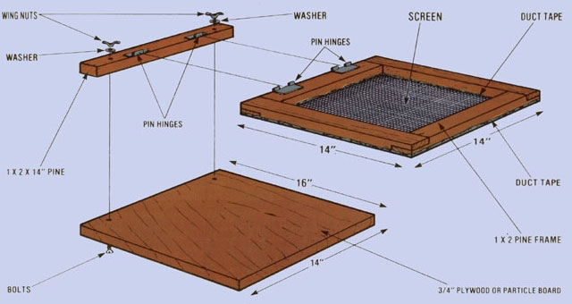
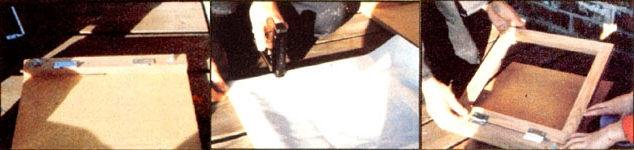

Winters can sometimes get to seeming like they'll last forever here in northern Maine. But last year-right smack in the middle of one of those storms that make a person wonder whether anything will ever be green again-my friend Alan and I came up with a game that's just what the doctor ordered for cabin fever.
Feeling restless, and not willing to start another round of the same old stories (mine about the time the tree almost fell on me, followed by Alan's much-recounted tale about his journey south) that we'd told all the other evenings, I flicked a nickel across the table at my friend. Alan knocked the coin back at me, I gave it a smart finger snap and sent it spinning back at him . . . and inspiration smacked both of us at the same instant. It was a moment's work to set pairs of empty bottles up as goals, decide that only one digit could be used to defend (our first rule! ), and start playing hockey in earnest!
Before long, though, my finger was mighty sore from winging that nickel around, and Alan was complaining that my aim (which, I'll admit, was on the in consistent side) forced him to spend too much time scuttling across the floor after runaway coins. So I trotted out to the woodshed (noting, as I had done all too many times before, how quickly even hair freezes in 20 below zero weather!) and returned with a hunk of plywood and some odd lengths of furring strips.
Ten minutes of sawing and hammering turned those scraps into a first-rate game board. And while I was whipping the playing surface into shape, Alan whittled out a dandy pair of miniature hockey sticks! We had a fine time, making a shot here, inventing a rule there . . . and before long the game evolved into a pastime that's since proved popular with a crew that includes both homestead tots and stir-crazy loggers!
You can throw together a rough-and-tumble nickel hockey board in ten minutes or so . . . or you can do as I eventually did, and make as fancy a playing "field" as your scrap lumber supply and woodworking skill allow. In either case, though, the design will be about the same.
Begin by cutting a piece of 1/2"-or thickerplywood into a 16" X 24" rectangle (you can, of course, vary any of the measurements given here, but these dimensions are the ones that seem to work best for us).
Then, centered at each 16" edge, draw and cut out a 1-1/2"-high triangle with a 1-1/2" base. These openings are the goals that the coin puck will-on a good shot-fall into. With that done, fasten strips of 1 X 2 along the sides of the board, using nails, dowels, wood screws, or what have you. (Of course, the wooden walls will also serve to close in the goals at the back.)
That finishes the carpentry. To complete the board, you'll have to draw a red centerline with a felt-tipped marker, and you may then want to varnish the surface. (This step isn't absolutely necessary, but it will prevent spilled home brew from smearing the inked line.) As a final touch, perhaps you'll decide to put cardboard or cloth bottoms on the open goals. . . in order to catch the coins when the board is used on other than a flat surface.
To complete your game, you'll need a nickel and a pair of homemade hockey sticks. We simply carve (or cut, using a jig saw) the little swatters from 1/8" thick wood. You can get creative with the shape if you like, but it's best to standardize the length of the stick's "blade" at 1-1/2" (as you can imagine, a larger stick could give a player quite a defensive advantage).
During the first few weeks of use, my hockey board was subjected to an incredible amount of punishment. So, to keep the game-and our occasional weekend houseful of partying homesteaders and lumberjacks-under control, Alan and I established a few simple rules. (Again, these can be considered a starting point . . . you'll probably devise more regulations of your own as you become familiar with the game.)
Play begins with the flip of a coin. The winner of the toss then opens the game by shooting from anywhere on his or her side of the red centerline, while the other player, staying on the far side of the line, defends with the stick. (After a goal has been made, the player who didn't score returns the puck to play in the same manner.)
There are only two infractions that carry penalties. The first is placing a defensive stick within the goal "pit", and the second is moving one's stick across the red line. Either of these fouls results in the other player's getting a free shot . . . in which case he or she is allowed to swat the puck from any point on his or her side of the board, while the unlucky opponent's stick must be held, motionless, at the apex of the defended goal. (Free shots thus require banking the coin off the wall, and are far from being the "sure scores" they may sound like!)
If the puck is knocked clear off the board, the player who's not responsible for the overly eager swat is allowed to shoot the nickel just as in the opening move. Should the coin stop on the centerline, the shot goes to whoever reaches the puck first (unless, of course, he or she goes past the line in pursuit of the elusive five-cent piece!).
Probably the most difficult nickel hockey skill is simply keeping cool when you're on the defensive. It's pretty hard to maintain a Zen-like calm when your opponent has the puck whizzing about like an enraged bumblebee, but-in my experience at least-a player who stops defending his or her goal to chase after the nickel is usually beaten and back at the end of the waiting players' line in no time flat.
In fact, a lot of our group's hockey aficionados figure that the most important tactics to master are those that can help you move to the front of the line, and therefore back into the game, as rapidly as possible. (Announcing that there're fresh, hot doughnuts in the kitchen is a time-honored ploy! I And, if you can find the.. few minutes necessary to knock together your own nickel hockey board before next Saturday night, I think you'll understand our enthusiasm!
|
 |
 |
|